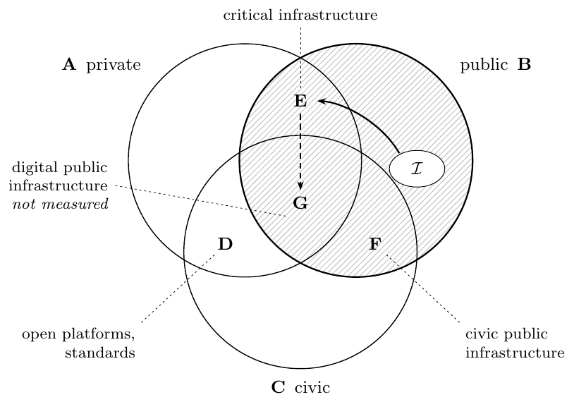
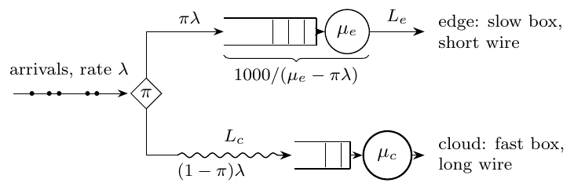
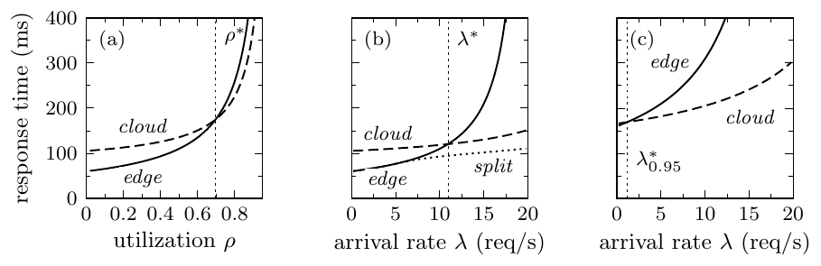
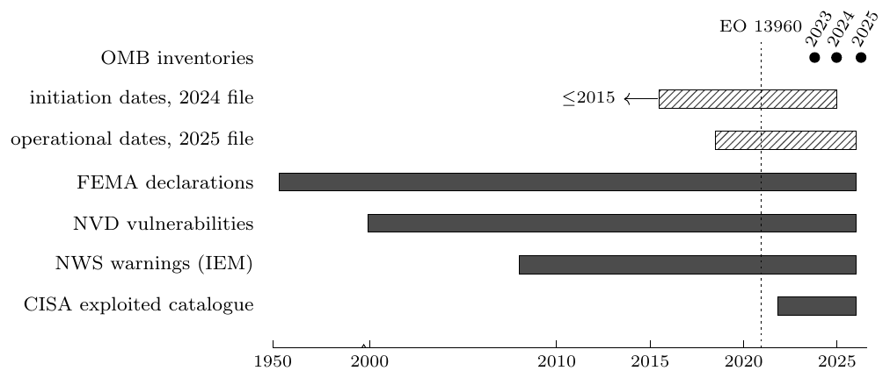
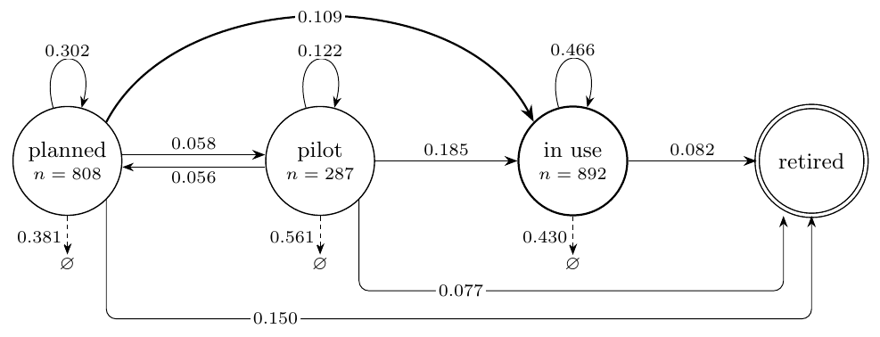
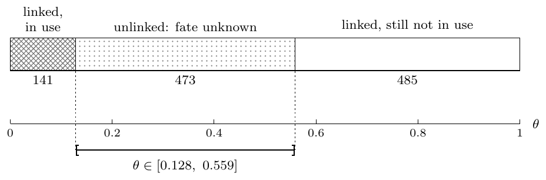
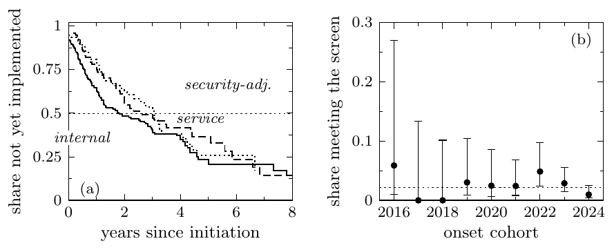
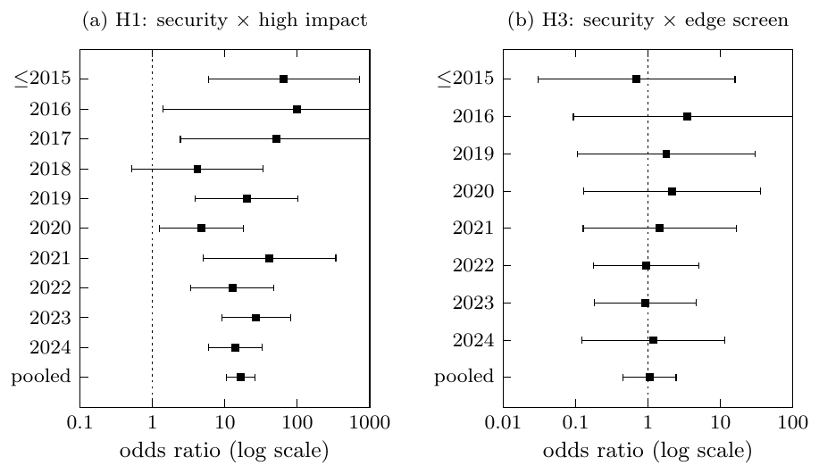

Let $\rho \in (0,1)$ be utilization, $\mu$ the service rate in requests per second, and $L$ the network delay in milliseconds. The response time in milliseconds is
$$T(\mu,\rho,L) = \frac{1000}{\mu(1-\rho)} + L.$$
The first term is the mean sojourn in an M/M/1 queue, converted from seconds to milliseconds. At $\rho \ge 1$ the sojourn is undefined.
The base parameters in the draft are a cloud service at $\mu = 33$ requests per second and $L = 75$ ms, from the MLPerf Inference v3.0 note, and an edge device at $\mu = 20$ requests per second and $L = 10$ ms, from the Jetson AGX Xavier note. The crossover $\rho^\ast$ is the smallest root of $T_{\mathrm{edge}}(\rho) - T_{\mathrm{cloud}}(\rho) = 0$. At those parameters the root sits near $0.70$. Edge is the faster curve only when utilization is below that root. The figures on this page are the ones already drawn for the working paper.

The inventory sits in the public sector. The hardware an edge system runs on is physical infrastructure at the site, in the overlap with private production. Digital public infrastructure in the OECD sense is the centre region, and this paper does not measure it.

A share of arrivals goes to a slower server on a short wire. The rest crosses a longer wire to a faster server.

Mean and tail response times at the base hardware. The edge and cloud curves cross at a common utilization, and again at a common arrival rate. At the 95th percentile that second crossing sits near zero.
The Office of Management and Budget has published three public AI inventories, for 2023, 2024, and 2025. None of them records a service rate, a latency, or a utilization. They record a name, a description, and a stage. The stage is the stage the agency wrote down. It is not an observed deployment, and a larger list is not, by itself, a higher arrival rate.
The inventories enter the latency model only as weights: the share of rows whose descriptions use the operational language the screen treats as edge-suited, such as field work, real-time constraints, weak connectivity, or local processing. That share scales the gap between the cloud time and the edge time. The gap is a gain only while $\rho < \rho^\ast$.
The public draft is the July 2026 working paper, doi:10.2139/ssrn.7141719. The three-year extension uses the same hardware model. The 2025 release does not move $\rho^\ast$.

What each file actually covers. The three inventory releases are the dots at the right. Hatched bars are dates reconstructed from a later filing, so they include only use cases that were still in that file.

Where a 2024 name sits in 2025. The dashed arrows are names that do not appear in the next file.

Of the names not in use in 2024, 141 linked names are in use in 2025. The 473 unlinked names could move that share anywhere from 0.128 to 0.559.

Dates recorded in the 2024 file, which include only use cases still in that file. Internal-capacity cases reach implementation sooner than security-adjacent ones. The share that meets the edge screen stays low across onset years.

Security agencies and high-impact filings move together in every onset cohort. Security agencies and the edge screen do not.
@unpublished{daneshi2026edge,
author = {Daneshi, Ashkaan},
title = {Conditional value of edge {AI} for {U.S.} federal agencies},
year = {2026},
note = {SSRN Working Paper 7141719},
doi = {10.2139/ssrn.7141719}
}